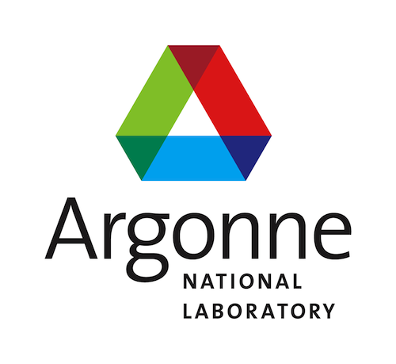

About August "Gus" Domel.
I am currently working on my Ph.D. at Harvard University where I am studying Materials Science and Mechanical Engineering on full scholarship from the university (in addition to being a Pierce Fellow, Winston Chen Fellow, Kao Fellow, and Dudley Fellow). The topic of my thesis is bio-inspired design for mechanical and biomechanical applications. In addition, I have completed a master's degree in Materials Science and Mechanical Engineering at Harvard. Before attending Harvard, I completed my Bachelor of Science in mechanical engineering at Northwestern University. While at Northwestern, in addition to the research that I did throughout the school year in the Neuroscience and Robotics Laboratory and the Solid Mechanics/Computational Laboratory, I was the Co-Founder and Vice President of the newly formed Northwestern University Chapter of Engineers Without Borders.
During my time at Northwestern, I also was a member of the National Honorary Fraternity for Engineers, Tau Beta Pi, and Northwestern’s Mechanical Engineering Undergraduate Advisory Board, all while still maintaining a 3.99/4.00 GPA (graduated #1 in the School of Engineering and Applied Science). In my spare time, I enjoyed playing intramural football, basketball, and softball.
Throughout my studies at Harvard and Northwestern and my internships, I have become proficient in many types of CAD, including SolidWorks, Pro/ENGINEER, and Unigraphics NX. I have also learned basic coding in various programming languages, including Java, Python, and Matlab.
Harvard University
August 2014-Present
While doing my Ph.D. at Harvard in the Bertoldi Lab, I have worked on various research projects, much of which has been published and can be found on my CV. My thesis topic is bio-inspired design for mechanical and biomechanical applications. While carrying out my thesis, my research has involved a variety of topics, from buckling analyses to shark-inspired design for improved aerodynamics to octopus-inspired soft robotics. My shark-inspired engineering work was published with the Royal Society of London and can be found in the link below. After being interviewed by National Geographic, Newsweek, and Physics World about the research, the following articles were published further discussing the work.
- Royal Society of London Publication
Publication
- National Geographic
- Newsweek
- Physics World
Press Coverage
MIT
October 2014-May 2015
In conjunction with MIT's AgeLab, we focused on our research efforts on Human Factors and Ergonomics. We studied the effects of smart technology on driving performance with the use of driving simulations. The different studies we carried out were published at the Proceedings of the Human Factors and Ergonomics Society Annual Meeting as well as the New England Conference (where we also presented). A link to a sample of the work can be found below.

Argonne National Laboratory
Summer 2013
At Argonne, I worked on a failure analysis project. We developed a software program that allows a user to monitor a nuclear plant from a remote lab. Using data from sensors that are located on different components of a nuclear plant, the software program monitors the plant with codes that diagnose any problems with the plant based on the sensor data. It then displays these problems on a graphical user interface so that a person can oversee the nuclear plant from a remote location.
View Lab's ResearchSolid Mechanics/Computational Laboratory
September 2013 - March 2014
Working in Dr. Wing Kam Liu's Lab, I helped to publish a paper that discusses homogenized models for filled elastomers in the Composites Part B: Engineering journal. Essentially, these models help to drastically decrease simulation time, compared to previous direct numerical simulations, when deriving relationships between the microstructure of the filled elastomers and their damping properties. In addition, I worked on nickel titanium shape memory alloys to help predict microstructural changes to these alloys to improve their ultra high cycle fatigue life.
View Research PaperNeuroscience and Robotics Laboratory
May 2011 - March 2014
In the Neuroscience and Robotics Laboratory, I designed and built a device that uses DAQ hardware and several load cells to measure forces exerted by a user on the surface of the device. Using this device, I was able to study 2 topics: 1. How using a thumb as part of a pinch grip, in comparison to just using an index finger to explore the surface, affects a person’s perception of the surface. 2. How forces exerted by a user are a function of the actual and perceived height of a bump on the surface.
View Lab's ResearchClick Images to Enlarge

{kind=link}
{kind=link}
Engineering Systems Inc.
Spring 2014, Summer 2014, Summer 2015
During my time at ESI, I assisted in consulting cases regarding accident reconstruction of various failed mechanisms. This included cases ranging from bone fractures associated with saw injuries to slip and fall cases to plane crashes. In addition to this, I performed torque testing of ladders to assist in the development of ANSI standard's, particularly the ladder twist failure criterion. Also, I conducted research to study the injuries of occupants that are frequently associated with vehicular impacts.
Motorola Solutions, Inc.
Summer 2012
At Motorola Solutions, I was given the opportunity to create mockups of radio repeaters to verify cable assembly layout. Also, I designed fixture plates and adapters for compressive testing of microphone housings being designed for the new two-way radios. I also performed water immersion testing analyses to locate infiltration weaknesses in the radios.
Motorola Mobility
Summer 2011
I worked at Motorola Mobility when the Droid Razr cell phone was being developed. This gave me the opportunity to perform failure analysis and redesign for the volume and power buttons of the Droid Razr. In addition, I gathered and analyzed data on the performance of their new battery design, which did not have a hard casing in order to slim down the battery and ultimately the phone. If the the phone ever needed to be disassembled for repair, the battery deformed when removed from the circuit board because this type of battery did not have a hard casing. This gave me a chance to work as a part of a failure analysis project to quantify the extent of battery deformation upon removal. The data I gathered was presented to chemical engineers with whom a team, which included myself, worked to determine at what point a battery was no longer reusable based on the deformation. This data affected the design of the phone itself and prescribed a suggested process of battery removal in order to avoid damage that prevented the reuse of the battery.